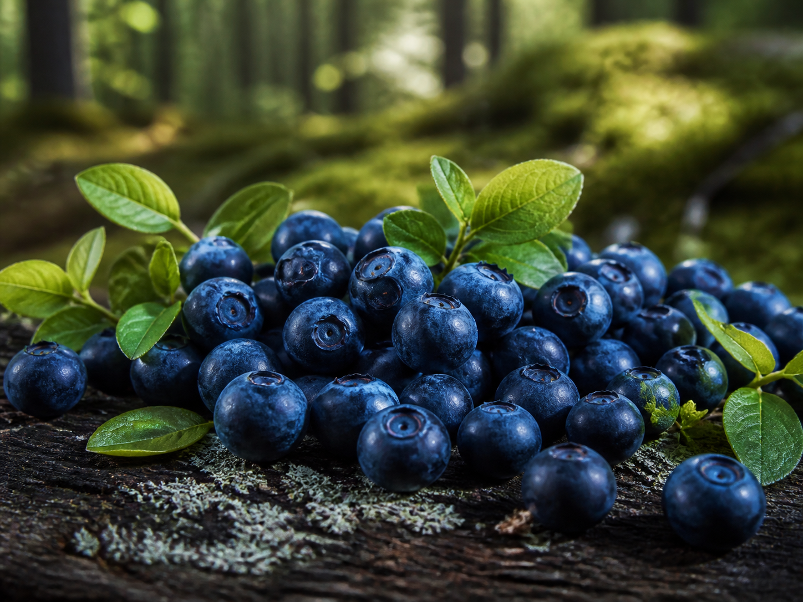
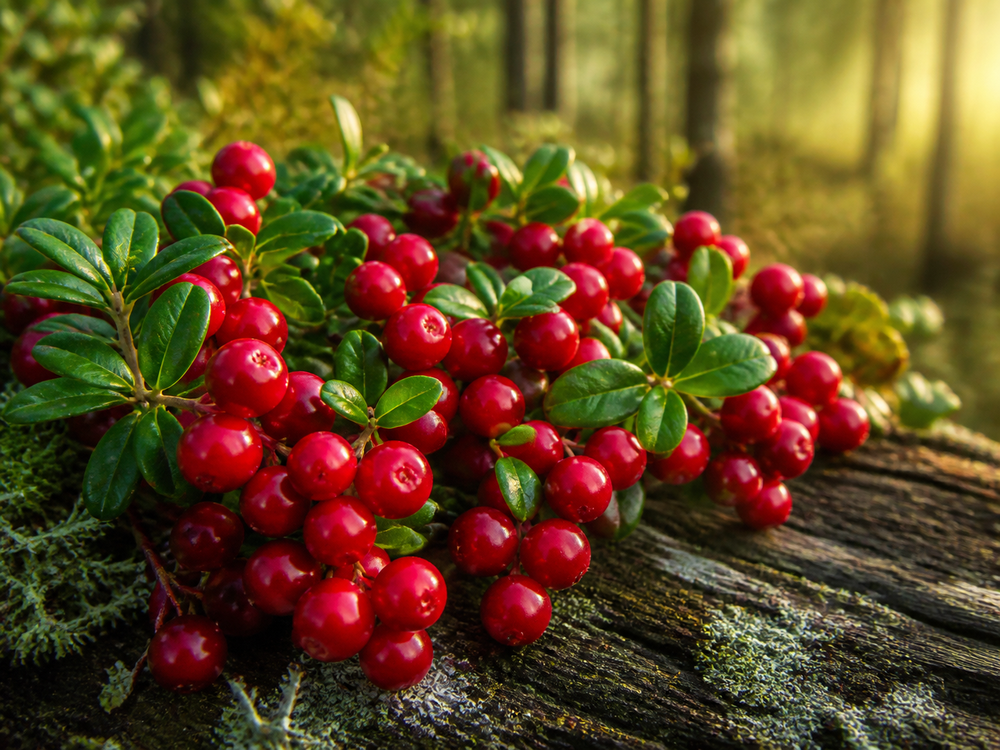
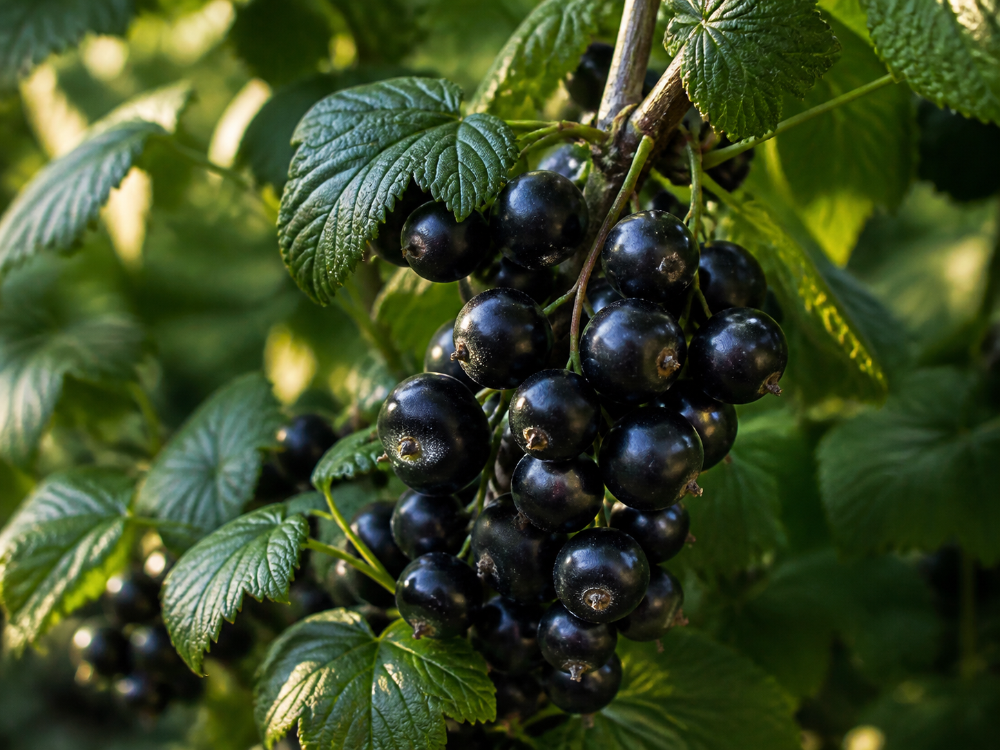

Blåbär
Söta och smakrika blåbär fyllda med antioxidanter och vitaminer.
- Användningsområden
- Mat, drycker och desserter.
Säsong: Juli – September
Fråga om produkten →
Upptäck vårt sortiment av finska bär för livsmedel, drycker och professionella kök.

Söta och smakrika blåbär fyllda med antioxidanter och vitaminer.

Syrliga och friska lingon. Perfekta för både mat och dryck.

Exklusiva och sällsynta hjortron med unik smak.

Aromatiska och rika på C-vitamin. Perfekta för juicer och desserter.
Svarta vinbär (Ribes nigrum) är uppskattade bär med intensiv smak, mörk färg och ett naturligt högt innehåll av vitaminer, mineraler och antioxidanter.
Svarta vinbär är särskilt kända för sitt höga innehåll av vitamin C. De används både som färska bär och som råvara inom livsmedelsindustrin för tillverkning av juice, sylt, saft, puréer och andra bärprodukter.
| Näringsämne | Ungefärlig mängd |
|---|---|
| Energi | 63 kcal |
| Kolhydrater | 15,4 g |
| Sockerarter | 6,8 g |
| Kostfiber | 4,3 g |
| Vitamin C | 181 mg |
| Vitamin A | 12 µg |
| Vitamin E | 1 mg |
| Vitamin K | 2,8 µg |
| Vitamin B1 | 0,05 mg |
| Vitamin B2 | 0,05 mg |
| Vitamin B6 | 0,07 mg |
| Kalium | 322 mg |
| Kalcium | 55 mg |
| Magnesium | 24 mg |
| Järn | 1,5 mg |
Svarta vinbär passar utmärkt som råvara för:
Wild Finnish Berries Oy arbetar med inköp och partihandel av finska bär.
Vi värdesätter naturligt ursprung, hög kvalitet och långsiktiga samarbeten med leverantörer och kunder.
Vårt mål är att erbjuda högkvalitativa bär från Finland till både den inhemska och internationella marknaden.
Kontakta oss för aktuell tillgång, mängder, förpackning och leverans. Säsongerna ovan anger plockningstider; tillgången bekräftas vid förfrågan.
Kontakta oss →